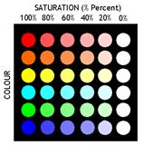
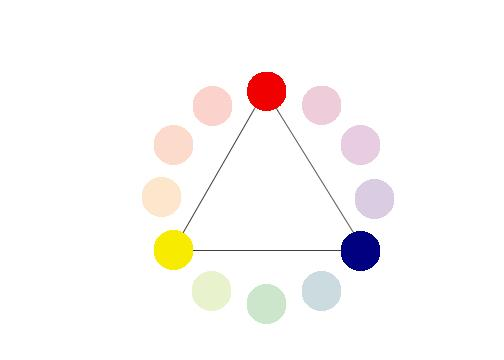

Color properties
Hue
Hue defines pure colors in terms of red, green or blue. Hue also defines mixtures of two pure colors like red-yellow or yellow-green.
|
|
|
Tint
A tint is a mixing result of an original color to which has been added white. If you tinted a color, you've been adding white to the original color.
Shade
A shade is a mixing result of an original color to which has been added black. A shade is darker than the original color.
Tone
Tone is result of mixing a pure color with any neutral/grayscale color including the two extremes white and black. By this definition all tints and shades are also considered to be tones.

Lightness or Value = Tone in percentage
Lightness is usually one property of three when used to determine a certain color and measured as percentage value. Lightness defines a range from dark (0%) to fully illuminated (100%).Any original hue has the average lightness level of 50%. Lightness is the range from fully shaded to fully tinted. Value or tone is a measure of how light or dark a color is, without any consideration for its hue.
.
Saturation or Chroma
Saturation is usually one property of three when used to determine a certain color and measured as percentage value. Saturation defines a range from pure color (100%) to gray (0%) at a constant lightness level. A pure color is fully saturated. Saturation is the purity of a color. The chroma or saturation of a color is a measure of how intense it is. High saturation colors look rich and full. Low saturation colors look dull and grayish..
|  |
Intensity / Luminosity
It can be used in conjunction with any color property. Luma (%) is the intensity of the achromatic signal contributing to our color perception.
Brightness / Luminicance
Brightness is an attribute of our perception which is mainly influenced by a color's lightness. For one color of specific hue the perception of brightness is also more intense, if we increase saturation.
Gray Scale
A grayscale is a series of neutral colors, ranging from black to white, or the other way around. Each step's color value is usually shifted by constant amounts.
The color wheel
A color wheel or color circle is an abstract illustrative organization of color hues around a circle that shows relationships between primary colors, secondary colors, complementary colors.
Begin a color wheel by positioning primary hues equidistant from one another, then create a bridge between primaries using secondary and tertiary colors.
Primary Colors
Colors at their basic essence; those colors that cannot be created by mixing others. e.g. Red, yellow and blue.

Secondary Colors
Those colors achieved by a mixture of two primaries.
e.g. Green, orange and purple
Tertiary Colors
Those colors achieved by a mixture of primary and secondary hues.
e.g. Yellow-orange, red-orange, red-purple, blue-purple, blue-green & yellow-green
Complementary Colors
Those colors located opposite each other on a color wheel.
Analogous Colors
Those colors located close together on a color wheel.
( Above content can be referenced at http://www.worqx.com/color/color_wheel.htm )
Color Context
How color behaves in relation to other colors and shapes is a complex area of color theory. Compare the contrast effects of different color backgrounds for the same green square in figure below.
Green appears more brilliant in red background and duller against blue background. In contrast with white it exhibits brilliance.
Web Content Accessibility Guidelines (WCAG) 2.0
Web Content Accessibility Guidelines (WCAG) 2.0 covers a wide range of recommendations for making Web content more accessible. These guidelines will also often make your web content more usable to users in general.
Principles of Accessibility
Anyone who wants to use the Web must have content that is:
- Perceivable-Information and user interface components must be presentable in ways they can be perceived.
- Operable - User interface components and navigation must be operable.
- Understandable - Information and the operation of user interface must be understandable.
- Robust - Content must be robust that it can be interpreted reliably by a wide variety of user agents and assistive technologies.
Guidelines for making content perceivable
- Provide text alternatives for non-text content – like braille, speech etc
- Provide alternatives for time-based media.
- Create content that can be presented in different ways.
- Make it easier to see and hear content separating foreground from background.
Color Text Legibility
W3C Guidelines for color readabilityThe brightness difference between foreground text-color and background-color should follow the formulae suggested in W3C Guidelines for good text-color visibility.
Color visibility algorithm (suggested by W3C standard)
Two colors provide good color visibility if the brightness difference and the color difference between the two colors are greater than a set range.
|
Color brightness = ((Red value X 299) + (Green value X 587) + (Blue value X 114)) / 1000
For good color visibility brightness difference should be > 125 |
|
Color difference = (maximum (Red value 1, Red value 2) - minimum (Red value 1, Red value 2)) + (maximum (Green value 1, Green value 2) - minimum (Green value 1, Green value 2)) + (maximum (Blue value 1, Blue value 2) - minimum (Blue value 1, Blue value 2))
For good color visibility color difference should be > 500 |
Note :
These formulae are only suggestions and are not reliable to full extent. In actual practice you are expected to test the color combinations again and again for readability.

Some websites and services allow you to customize your profile by uploading pictures, changing the background color or other aspects of the design. Opening up the ability to customize your site’s color scheme can be a recipe for disaster unless you are flexible and understand how to find maximum color contrasts.
At the end of this experiment1. You will understand the fundamental properties of color, color wheel and color context.
2. You will be able to apply color theory in creating attractive web content.
3. You will understand essential features required for color text legibility on web pages.
4. You will be able to apply W3C guidelines for color text readability on web pages.

The simulation based experiment allows you to apply various colors to text as well as its background and create different color contrasts.
To activate this simulation program go to simulator tab and click on the relevant button.
Steps for experiment
The screen consists of two sections
(a) website window - black outline
(b) color- setting window -- blue outline
Website Window
- You will see a mock web-site of IITG, Guwahati in this window with broad black outline.
- Various sections of this homepage have been identified with thin black borders.
- You can select any of these sections by clicking within its boundary.
- When you select a section the color of its border will change to red.
- You can now use color setting window to set colors of this selected section.
- Unless you select a section from the homepage the color setting will not be applied.
- You can give the RGB color values required through the input boxes provided. The converted hex color code will automatically be displayed.
- To apply this color to text press the <set color> button.
- Visa-versa if you know the hex color code of a color, you can directly enter it in the input box provided. The corresponding RGB color values will be computed and dislayed after you press <set color> button.
- Using color selection slider - In case of hex color code setting, a color selection slider can be used which will give you an immediate visual feedback of the color selected. Press <OK> button to select the color identified using the slider.
- Remember that the <set color> button will apply the text color settings only to the selected section of the website.
Color-setting window (Bakground color setting)
- Same as above you can give the RGB color values required in the input boxes provided.
- To apply this color setting to background press same <set color> button. The converted hex code of the color will automatically be computed and displayed.
- Visa-versa if you know the hex color code of a color, you can directly enter it in the input box provided. The corresponding RGB color values will be computed and dislayed after you press <set color> button.
- Using color selection slider - A similar color selection slider is available for selecting background color with hex values. Use this slider if required and press <OK> button in the end.
- Remember that the <set color> button will apply the background color settings only to the selected section of the website.
You can experiment by selecting different sections of the home-page in the mock website window and apply various text and background colors.
Apply the color brightness difference and color difference formulae to see if they really work in practice improving legibility of the color text.


- What do you mean by tone and saturation of a color?
- What is the difference between tint and shade of a color?
- What are primary, secondary and tertiary colors?
- What is the practical significance of the concept "color context" ? Give examples.
- Find the range of wavelengths that are visible to human eye.
- What does CMYK and RGB stand for ?
- What are web-safe colors?
- What is color visibility algorithm? What is the W3C guideline for color readability?
- Explain principles of web acessibility in brief.
In the figure below there are five colored backgrounds B1- B5 and five colored texts T1- T5.
Using W3C guidelines for color readability (using color brightness and color difference) find the
text-background pairs from below for best color text legibility.
Use hex codes of colors in computations.
In the figure below which of the webpage color combinations is the best.
( Use online color-picker tool to get color codes - http://www.iconico.com/colorpic/ )

Books
URLs ( as on 23/4/2012)
http://www.workwithcolor.com/color-properties-definitions-0101.htm
http://www.colormatters.com/color-and-design/basic-color-theory
http://www.w3.org/TR/UNDERSTANDING-WCAG20/intro.html#introduction-fourprincs-head
http://www.hgrebdes.com/colour/spectrum/colourvisibility.html
http://www.techbomb.com/websafe/
http://samples.msdn.microsoft.com/workshop/samples/author/dhtml/colors/ColorTable.htm
http://donnayoung.org/art/color-theory.htm